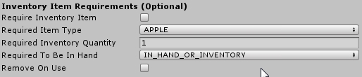
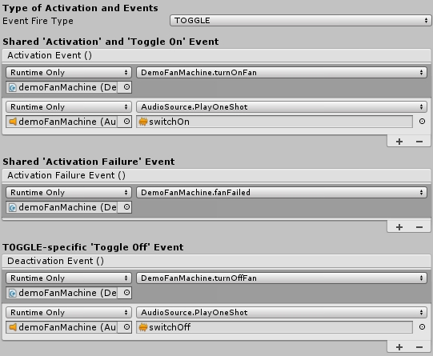
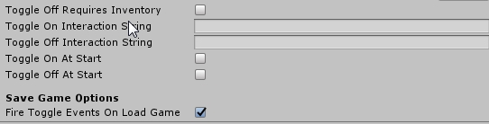

Activate type interactions use the FPEInteractableActivateScript component and are possibly the most versatile of all the included interaction types.
Activate type interactions can optionally require inventory in order to succeed. For example, a door might require a key. A machine might require a batter. A jukebox might require 2 coins.
| Require Inventory Item | If true, the rest of the field values matter, and the activation will require inventory. If false, the other fields for Inventory Requirements are ignored. |
| Required Item Type | The Inventory Item Type required for the activation to succeed. (e.g. KEYCARD, BATTERY, etc.). |
| Required Inventory Quantity | The quantity of the required item type needed. (e.g. 1 KEYCARD, 3 BATTERY, etc.) |
| Required To Be In Hand | There are 3 options here:
|
| Remove On Use | If true, the inventory that was used to perform the actiation is destroyed. (e.g. For a door that requires a KEYCARD, you probably want this to be false. For a juicer that needs 5 apples and returns apple juice, you probably want this to be true. |
There are 3 core types of activation, which are distinguished by the Event Fire Type value assigned in the Inspector:
| ONCE | This makes the Activation event(s) occur exactly once. This is good for starting one-way sequences of events or game-changing choices. (e.g. cutting a rope, smashing a glass panel, etc.) |
| EVERYTIME | This makes the Activation event(s) occur every time. This is good for repeating actions (e.g. activate doors, press item dispensors, etc.) |
| TOGGLE | This makes the Toggle On and Toggle Off event(s) happen in a rotating order. For example, turning on a light, then turning it off. |
These Event Fire Types drive the Events assigned in the Inspector
| Shared 'Activation' and 'Toggle On' Event | These event(s) are used for all Event Fire Types. If TOGGLE type, this event is fired on Toggle On. If ONCE or EVERYTIME, this is the 'Activation' event. For example, demoSwitch uses EVERYTIME event fire type, and the 'Activation' event is assigned to play a sound, animation, and turn on a light. |
| Shared 'Activation Failure' Event | These event(s) are used for all Event Fire Types. When an Activation requires inventory to activate, and the player does not have the required inventory, these event(s) are fired. |
| TOGGLE-specific 'Toggle Off' Event | These event(s) are used for the TOGGLE Event Fire Type only. When an object is Toggled Off, these event(s) are fired. |
The Inspector Events as assigned for the demoFanMachine prefab, which is included in the DemoPrefabs folder.
There are a few TOGGLE-specific options in the Inspector that require your attention to ensure your Toggle Activations behave properly.
| Toggle Off Requires Inventory | If true, the "Required Inventory" section of the settings will also apply to the Toggle Off event(s). For example, if you required a magic wand to produce a magic effect, you may want to require that the player have the wand to stop said magic effect. However, if the player needs a battery to turn on a machine, it makes less sense that they also need a battery to turn off the machine (especially if the machine consumes the battery). |
| Toggle On Interaction String | Applied to the Base object's Interaction String when ready for a Toggle On activation (e.g. a light switch Toggle could read 'Turn lights on' when its currently off) |
| Toggle Off Interaction String | Applied to the Base object's Interaction String when ready for a Toggle Off activation (e.g. a light switch Toggle could read 'Turn lights off' when its currently on) |
| Toggle On At Start | If true, the Toggle On event(s) will be fired when scene Starts. NOTE: Inventory Requirements are ignored if this is true. The Toggle On is simply fired blindly. |
| Toggle Off At Start | If true, the Toggle Off event(s) will be fired when scene Starts. NOTE: Inventory Requirements are ignored if this is true. The Toggle Off is simply fired blindly. |
| Fire Toggle Events On Load Game | If true (default), toggle events are fired when the game is loaded, restoring previous toggle states. For example: Toggle On a light switch then save the game. If this value is true, the Toggle On event(s) are fired again when the game is loaded. |